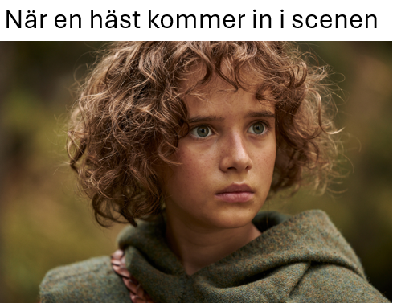

| Nyheter från Midnattssolens Westernryttare. Ser brevet konstigt ut? View this email in your browser | ||||

|
||||
|
||||
Styrelsen informerar
Den här sommaren planerar vi i styrelsen att annordna en mängd med aktiviteter. Bland annat kommer vi, enligt tradition, köra Midsommarbus! Vi kommer dessutom senare i sommar att genomföra ett hästkollo för klubbens ungdomar! Här är syftet att få ha kul med sin häst och andra deltagare. MSWR kommer stå för hela kollot vilket gör det gratis för deltagarna att delta. Det kommer finnas 10 platser så först till kvarn gäller! Inom kort kommer anmälningen öppna så håll utkik på våra sociala medier.
|
||||
 Nyheter från WRAS
WRAS (Western Riders Association of Sweden) är MSWR:s förbund och samlar alla westernföreningar i Sverige. På WRAS hemsida kan man läsa mer om organisationen och nyheter för Western Sverige. Nyhetsbrevets meme |